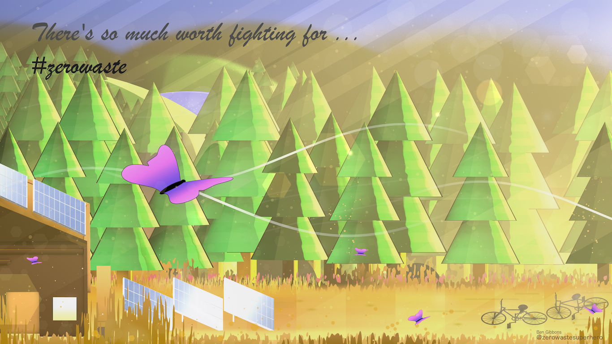
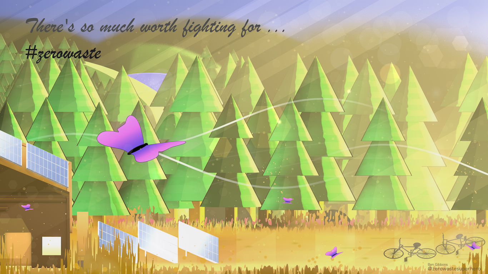
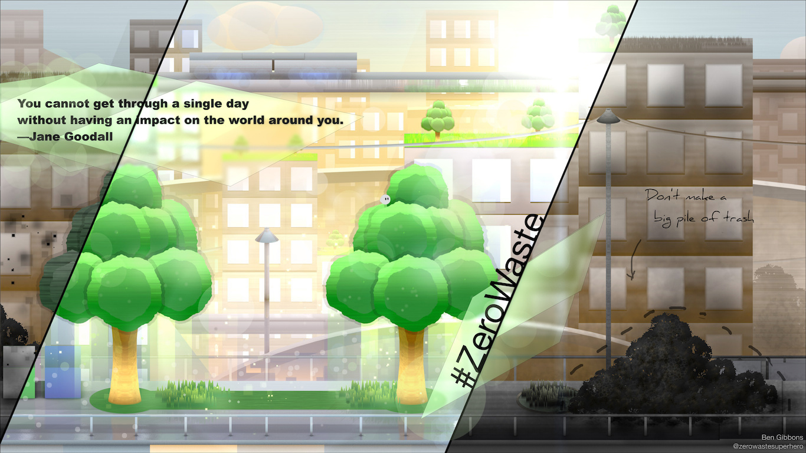
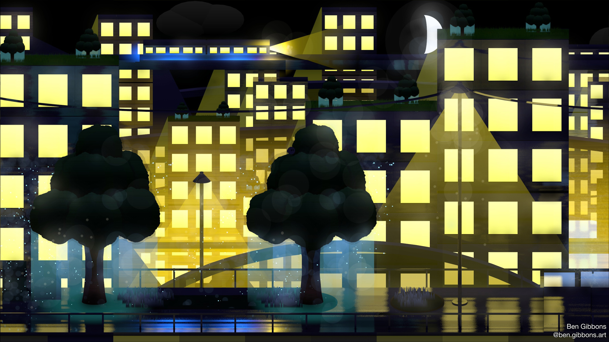
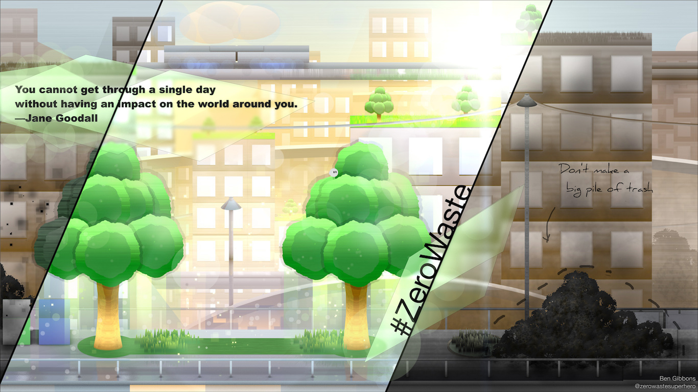
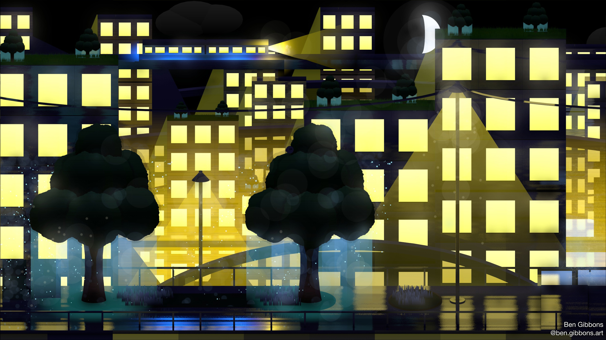

Art Gallery:
I started using Cinema4D when I was around 8 years old as part of an after school class.
Normally, the school only let older kids into the class but I was totally detirmined and the teacher took pity on me.
Cinema4D is an amazing tool which allows the user to create complex 3D models. It's used in everything from video game design to blockbuster movies.
More info about Cinema4D.
 For more, check out my instagram!
For more, check out my instagram!
 

 




Graphite
A short Cinema4D movie I made as a school project.


40% nerd
20% artist
20% fitness nut
20% big brother
100% Heart
This is the mobile version of this site